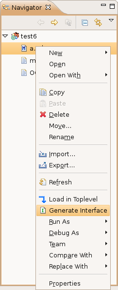

With the "OCaml Managed Project" type, interfaces are automatically created for you every time the project is compiled. You can then modify these interfaces to remove definitions you don't want to export. Once an interface has been modified, it will not be overwritten by the compiler. So, if you want an interface to be regenerated, you can delete it, and it will reappear the next time your project is compiled.
With the "OCaml Makefile Project" and "OCaml Empty Makefile Project" types, interfaces are not generated automatically, but you can generate them manually by right-clicking on a module in the navigator, and by selecting Generate Interface in the pop-up menu that appears:

Note: generating interfaces only works on modules without dependencies for now.